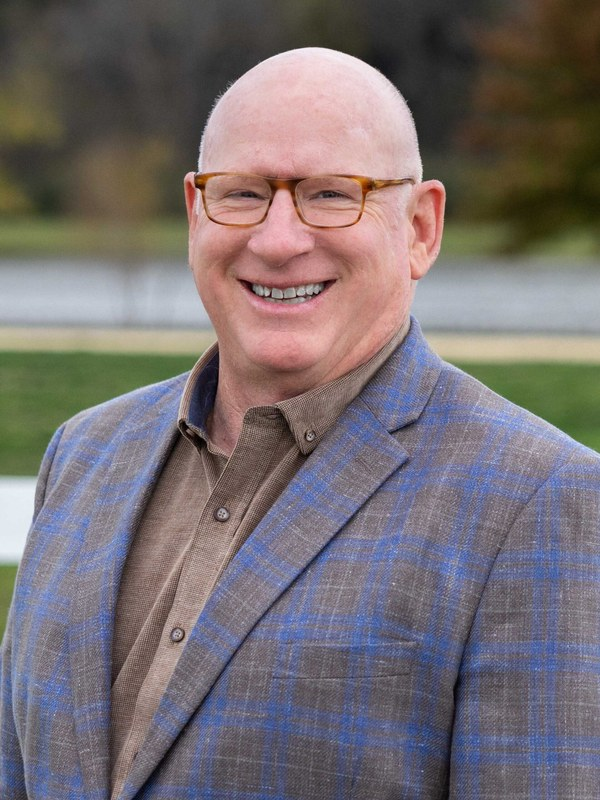

David Atchison
FounderWith over 40 years as a developer, broker, investor, consultant, and trusted advisor, David’s mission is to create the maximum value of every property for every client.
Experience
His work spans every asset class — retail, office, industrial, residential, and mixed-use — giving him the range to craft creative strategies for clients from small companies to large institutions. As founder of The Riverstone Group, David is energized by creating places where companies and individuals flourish through both the science and art of real estate development.
Outside the Office
David and his wife Elaine live in Franklin, TN; they have three adult children and a grandson. His break dancing days are over, but he still rocks a mean robot.